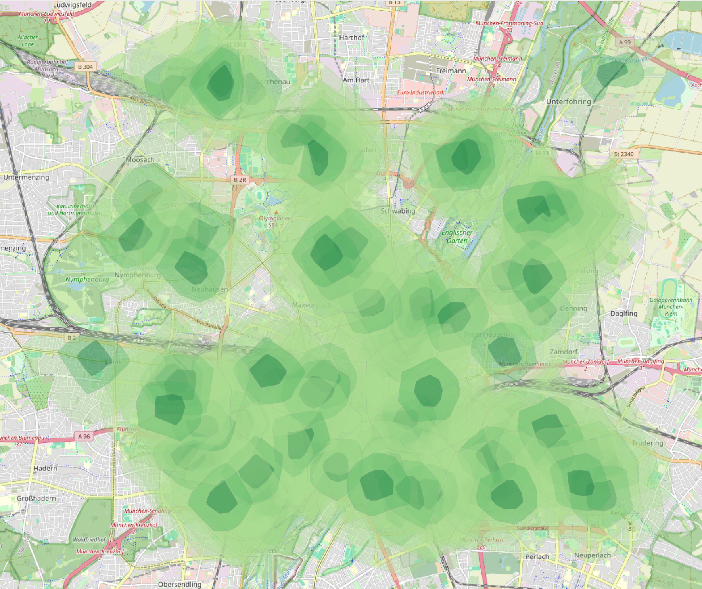

This project investigates how equitably recycling infrastructure is distributed across Munich by asking: how many homes are within a 5, 10, and 20-minute walk of a recycling point?

This project investigates how equitably recycling infrastructure is distributed across Munich by asking: how many homes are within a 5, 10, and 20-minute walk of a recycling point? Convenient access to recycling points is a known driver of recycling participation, making this a meaningful, everyday sustainability question.
Using OpenStreetMap data and network-based isochrone analysis, this project moves beyond simple proximity to reflect how people actually move through a city, via real streets rather than straight-line distance, revealing where access is strong and where gaps remain.
I used the QuickOSM plugin in QGIS to download recycling point locations and building footprints for Munich directly from OpenStreetMap. Since isochrone analysis requires point data, I converted the building footprint polygons into points using the Centroid tool.
I then used ORS Tools to generate walking-time isochrones, 5, 10, and 20-minute service areas, around each recycling point, based on real street-network routing. Finally, I used the Count Points in Polygon tool to calculate how many building centroids fell within each isochrone ring, giving a measurable count of homes reachable within each time threshold.